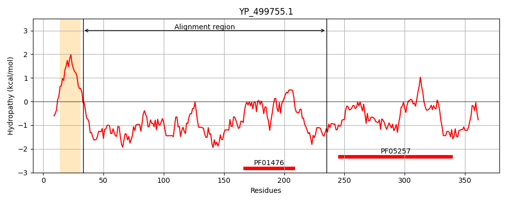
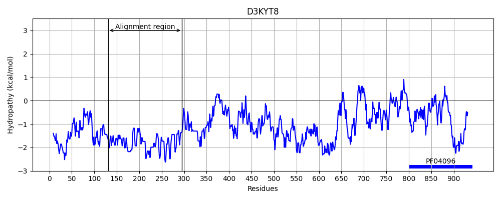
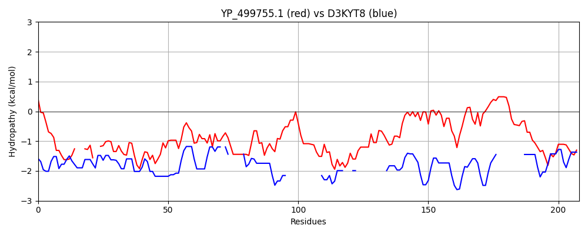

Hit Accession: D3KYT8
Hit TCID: 1.I.1.1.4
Hit Description: gnl|BL_ORD_ID|3147 gnl|TC-DB|D3KYT8|1.I.1.1.4 Micronuclear nucleoporin MicNup98A OS=Tetrahymena thermophila GN=NUP4 PE=2 SV=1
Mach Len: 208
e:0.000736
Query TMS Count : 1
Hit TMS Count: 0
TMS-Overlap Score: 0.000000
Predicted Substrates:CHEBI:8526;protein polypeptide chain, CHEBI:25367;molecule, CHEBI:8755;(ribonucleotide)n+m
BLAST Alignment:
Score: 95 , Bit scores: 41 bits, E-value: 7.4e-04, Alignment length: 208, Percentage identity: 25
Query: 33 SNKAYADEIDKSKDF---TRGY--EQNVFAKSELNANKNTTKDKIKNEGAVKTSDTSLKLDNKSAISNGNEINQDIKISNTPKNSSQGNNLVINNNELTKEIKIANLEAQNSNQKKTNKVTNNYFGYYSFREAPKTQIYTVKKGDTLSAIALKYKTTVSNIQNTNNIANPNLIFIGQKLKVPMTPLVEPKPKTVSSNNKSNSNSSTLN 235
+N Y + +++ +F T+GY QN+ +S N N NT ++ ++ ++ + +N + SN N NQ N N++ N+ NNN N+NQ N NN + I+ I K +I N NN N N IF SSNN +N+NSS N
Sbjct: 131 NNNMYYNNSNQTANFGQNTQGYYNNQNINNQSIFNGNNNTQRNFNNQNQSIFNNNNNNTNNNLNIFSNSNN-NQ-----NVFNNTNNSQNIFKNNN-------------NNNNQSNFN---NN-----------NSSIFNNNNNGNNQNIFSKNNNNNQSIFNNNNNNNNNNIFKSS----------NNNQNIFSSNNNNNNNSSIFN 295 | Protein Hydropathy Plots: |
|---|
|  |  |
Pairwise Alignment-Hydropathy Plot:
|
|---|
|  |